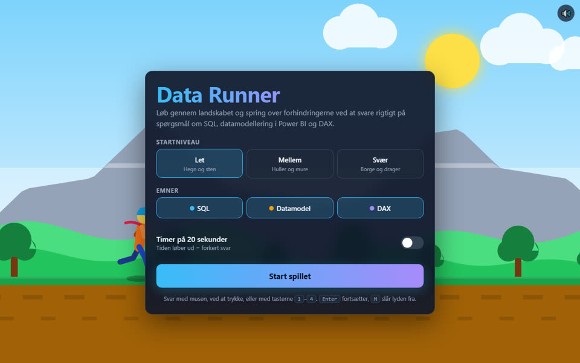
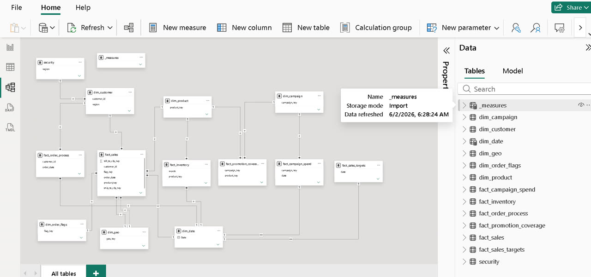
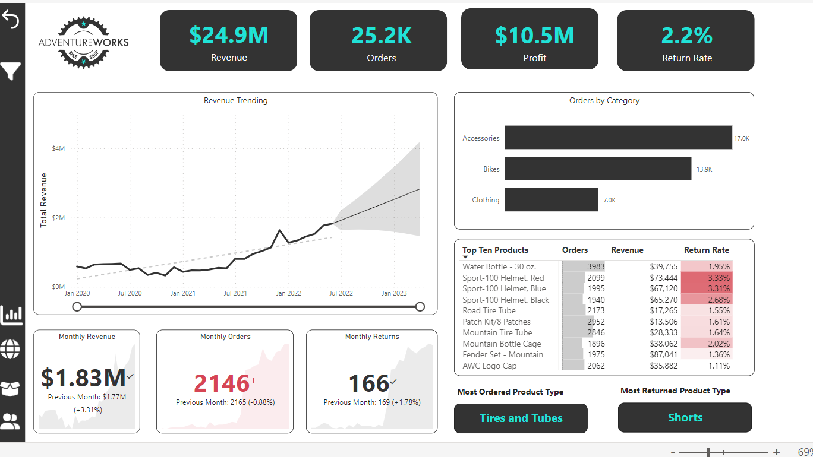

Copenhagen, Denmark
Peter Lindholm-Bekker
Business Analytics Lead Power BI & Data Modelling
I turn business data into models people trust and reports people actually use.
About
I'm based in Copenhagen and work as a Business Analytics Lead, building analytics solutions for clients, mostly in Power BI.
Most of my work is in the layer people don't see: well-structured semantic models, clear DAX and sensible data flows from sources like Snowflake. When that layer is right, the reports are fast and the numbers make sense.
I also care about the other end: helping clients tell a clear story with their data, so dashboards answer real business questions instead of just showing numbers.
Skills
Data & Platforms
Delivery
Projects
Data Runner
A browser game where you run through obstacles and can only get past them by answering multiple choice questions on SQL, Power BI data modelling and DAX.

Loading game…
The game couldn't load here
Play Data Runner in its own tab instead. It works on desktop and mobile.
Play Data Runner (opens in a new tab)Trouble with the embed? Open the game directly (opens in a new tab).
The Nightmare Data Model
A Power BI model built from a messy 23-sheet Excel export. I split it into clear dimensions and facts for sales, inventory, campaigns, order processing and targets, with shared dimensions, defined fact grains and a row-level security role.

Open the PBIX in Power BI Desktop (opens in a new tab) (free, Windows). Dataset and scenario by Data with Baraa (opens in a new tab).
AdventureWorks Sales Report
An interactive Power BI report that takes the reader from an executive dashboard down to individual products, customers and regions. It uses KPIs against targets, a what-if price parameter, field parameters and AI visuals to explain what drives the numbers.

Report pages
Techniques
Open the PBIX in Power BI Desktop (opens in a new tab) (free, Windows). Built while following the Power BI course from Maven Analytics (opens in a new tab), using Microsoft's AdventureWorks sample data.
Video
From raw data to value
A 10-second video about data modelling in Power BI: the star schema, and the five steps to a strong model. Animated entirely in code with React and Remotion, with no video editor involved.
Contact
Let's talk data
Working on a Power BI model, a reporting setup or a data story that needs a clearer structure? Send me an e-mail or reach out on LinkedIn.